distributions → moments → stats → correlation & curve fitting ✦
Binomial, Geometric, Poisson, Uniform, Exponential, Normal. High-yield · 25/75 MExam pattern · 3 hours · 25 sessional + 75 theory · Part-A Q1 compulsory: 10 short Q's × 1.5 M = 15 M (whole syllabus) · Part-B 6 long Q's × 15 M, attempt any 4 = 60 M (~1.5 Q per unit).
Click any topic to jump straight to it.
Probability fundamentals, random variables, PMF, PDF, CDF, and six core probability distributions.
High-yield · 25/75 M · 1.5 Q in Part-BTwo cards are drawn one after the other from a 52-card pack without replacement. Find the probability that both are kings.
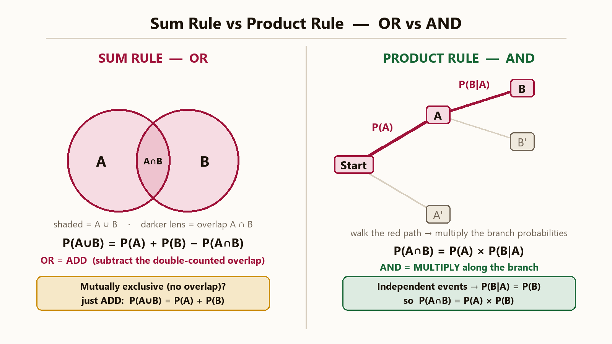
Two dice are thrown. Find P(sum divisible by 2 or 3).
An insurance company insured 2000 scooter drivers, 4000 car drivers, and 6000 truck drivers. The probabilities of an accident are 0.01, 0.03, and 0.15 respectively. One of the insured persons meets with an accident. What is the probability that he is a scooter driver?
| Feature | Discrete RV | Continuous RV |
|---|---|---|
| Values | Finite or countably infinite {x1, x2, ...} | Uncountable infinite values (intervals) |
| Probability Function | Probability Mass Function (PMF): P(X = x) | Probability Density Function (PDF): f(x) |
| Summation Rule | Sum over all values: ∑ P(X = x) = 1 | Integral over support: ∫ f(x) dx = 1 |
| Point Probability | P(X = x) can be positive | P(X = x) is strictly 0 at any single point |
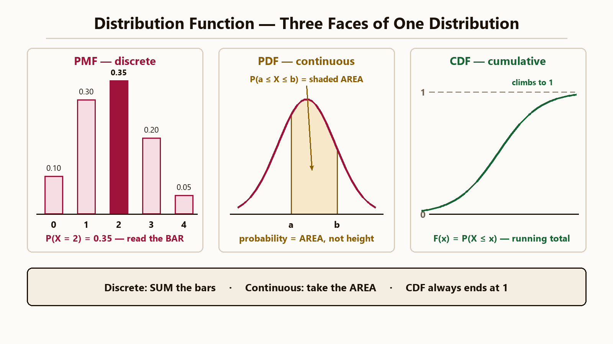
F(x) = P(X <= x) for all x.
Find the expected number of families having: (a) 2 boys and 2 girls, (b) at least 1 boy, (c) no girls, (d) at most 2 girls, out of 800 families with 4 children each. Assume equal probability for boys and girls.
Fit a Poisson distribution to the following data of deaths per day in an army camp and calculate theoretical frequencies:
| Deaths (x) | 0 | 1 | 2 | 3 | 4 |
|---|---|---|---|---|---|
| Frequency (f) | 122 | 60 | 15 | 2 | 1 |
Given razor blade packets of 10, consignment N = 10,000 packets. Prob of a defective blade is p = 0.002. Using Poisson, find number of packets with (a) no defective, (b) 1 defective, (c) 2 defective blades.
The life of battery cells is normally distributed with a mean of 12 hours and SD of 3 hours. Find the percentage of cells having life: (i) more than 15 hours, (ii) less than 6 hours, (iii) between 10 and 14 hours.
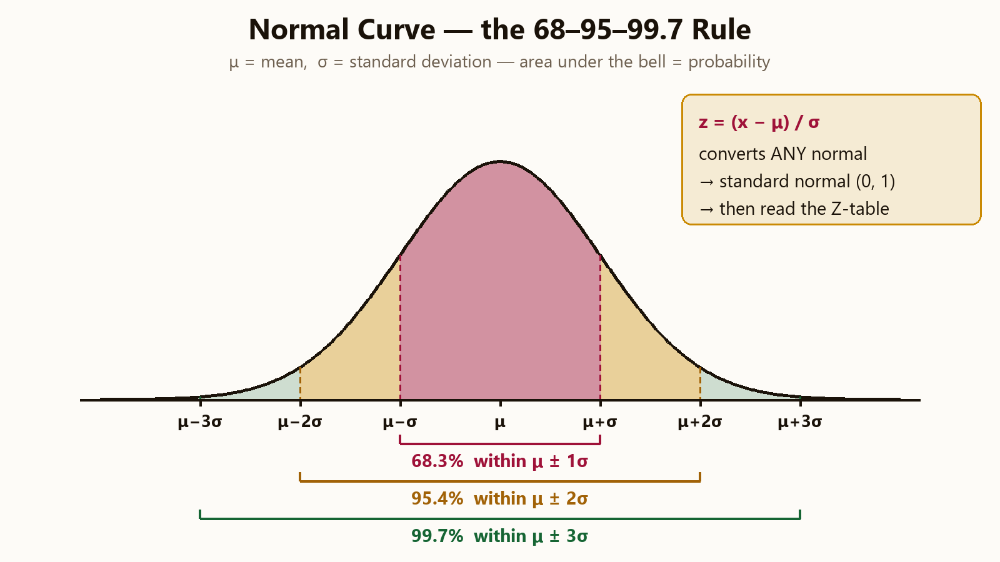
A salesman closes a sale with probability p = 0.3 on each independent call. Find the probability that his first sale happens on the 3rd call, and the average number of calls needed for the first sale.
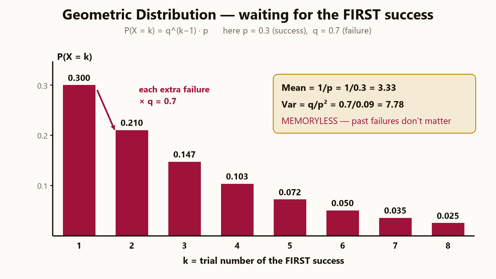
X is uniformly distributed on [2, 8]. Write the pdf, and find the mean and variance.
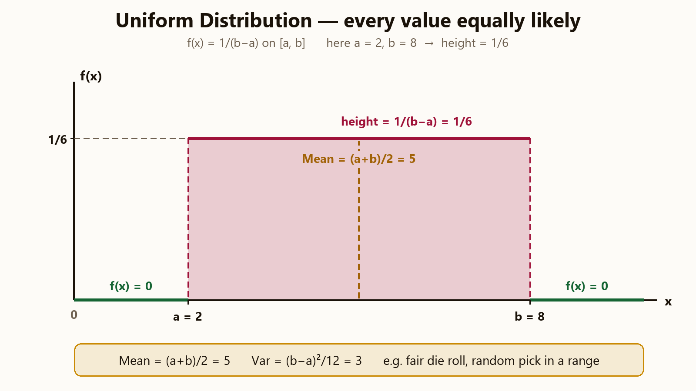
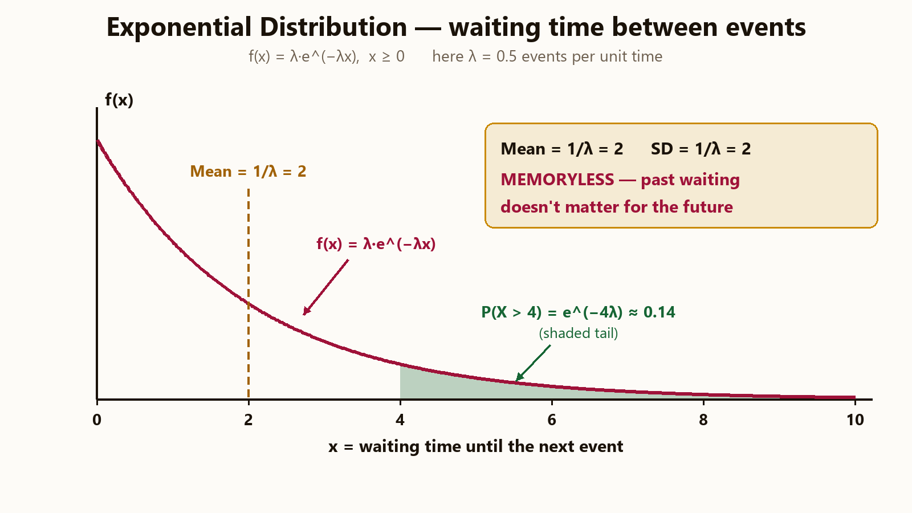
Mathematical expectations, Moment Generating Functions, and two-dimensional random variables (joint, marginal, conditional).
High-yield · 18/75 M · 1 Q in Part-B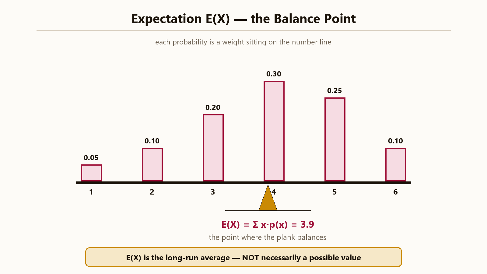
The first four raw moments of a distribution about the value A = 4 are -1.5, 17, -30, and 108. Find the moments about the mean. Also determine skewness (β₁) and kurtosis (β₂).
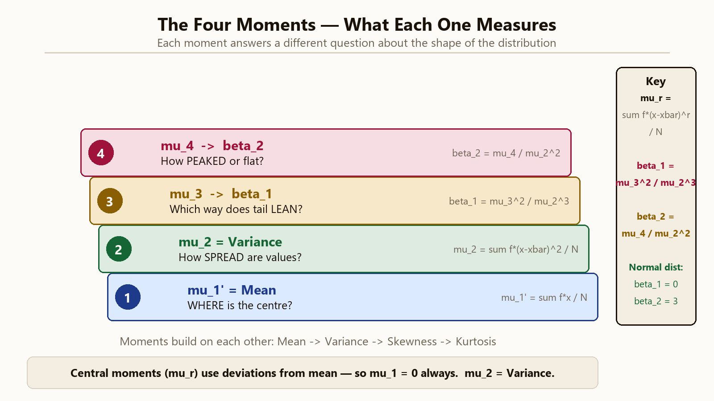
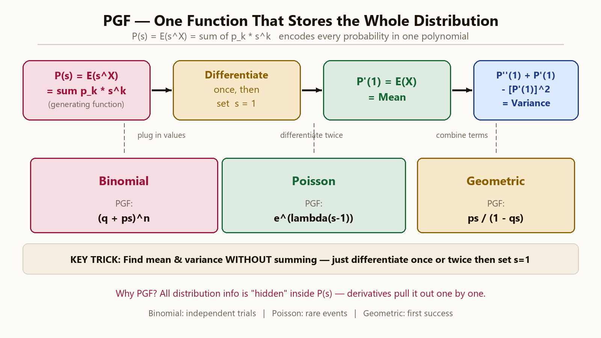
A random variable X has PGF P(s) = e^(2(s−1)). Identify the distribution of X and find its mean and variance.
Find the MGF of a random variable X with triangular pdf: f(x) = x for 0 <= x < 1, and f(x) = 2 - x for 1 <= x < 2.
Given the joint PDF f(x,y) = (6 - x - y)/8 for 0 < x < 2 and 2 < y < 4, and 0 elsewhere. Find: (i) P(X < 1, Y < 3), (ii) Marginal PDFs of X and Y, (iii) Conditional PDF f(y|x), (iv) check if X and Y are independent.
3 fair coins are tossed. Let X = number of heads in the first 2 tosses, Y = number of heads in the last 2 tosses. Compute Cov(X,Y) and correlation coefficient r(X,Y).
Data types, frequency distributions, measures of central tendency, dispersion, skewness, and kurtosis.
High-yield · 16/75 M · 1 Q in Part-B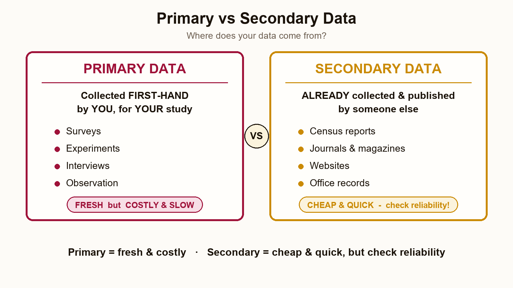
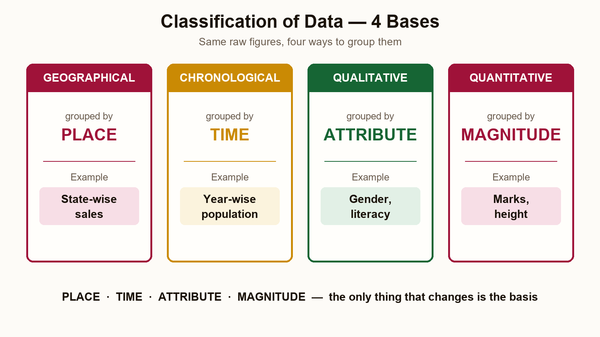
For the grouped median: L = lower boundary of the median class (the class where the N/2-th item lies), cf = cumulative frequency before that class, f = frequency of the median class, h = class width. For the grouped mode: L = lower boundary of the modal class (highest-frequency class), f1 = modal frequency, f0/f2 = frequencies of the classes just before/after it, h = class width.
A branch has 50 workers earning an average of ₹3000/day, and another branch has 70 workers earning an average of ₹3500/day. Find the combined mean daily wage.
Compute the mean, median and mode of the following grouped frequency distribution:
| Class | 0–10 | 10–20 | 20–30 | 30–40 | 40–50 | 50–60 |
|---|---|---|---|---|---|---|
| Freq (f) | 5 | 8 | 15 | 12 | 7 | 3 |
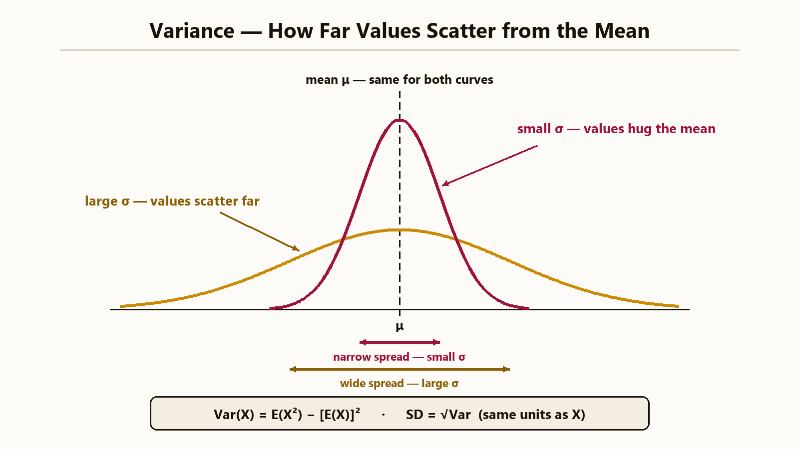
Find the Mean and Standard Deviation of the following frequency distribution:
| Class (x) | 0 | 1 | 2 | 3 | 4 | 5 | 6 | 7 |
|---|---|---|---|---|---|---|---|---|
| Freq (f) | 1 | 9 | 26 | 59 | 72 | 52 | 29 | 7 |
Prove that the skewness of an arithmetic progression sequence is zero.
Sk_p = 3 * (Mean - Median) / SD = 3 * (0) / SD = 0.
Compute Karl Pearson's coefficient of skewness Sk_p = (Mean − Mode) / SD for the following frequency distribution. Comment on the direction of skew.
| Class | 0–10 | 10–20 | 20–30 | 30–40 | 40–50 |
|---|---|---|---|---|---|
| Freq (f) | 6 | 16 | 14 | 9 | 5 |
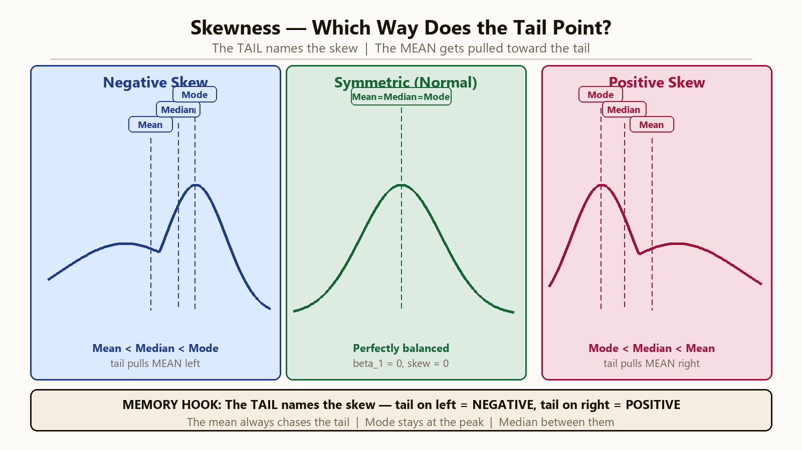
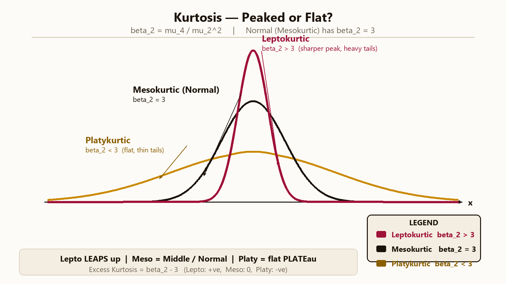
Bivariate relationships, linear correlation, lines of regression, rank correlation, and least-square curve fitting.
High-yield · 16/75 M · 1 Q in Part-B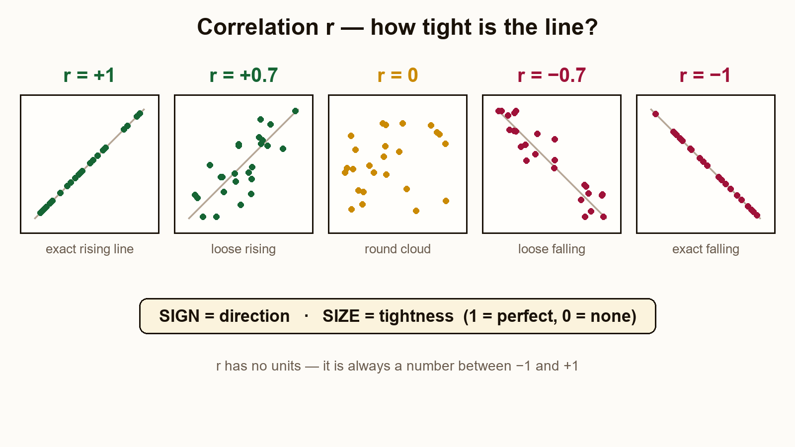
Calculate Karl Pearson's correlation coefficient for the following paired data:
| x | 24 | 27 | 28 | 28 | 29 | 30 | 32 | 33 | 35 | 40 |
|---|---|---|---|---|---|---|---|---|---|---|
| y | 18 | 20 | 22 | 25 | 22 | 28 | 30 | 27 | 30 | 22 |
Calculate Spearman's rank correlation for the marks given by two judges to 8 students:
| Judge A (x) | 78 | 89 | 97 | 69 | 59 | 79 | 68 | 57 |
|---|---|---|---|---|---|---|---|---|
| Judge B (y) | 125 | 137 | 156 | 112 | 107 | 136 | 123 | 108 |
In a partially destroyed laboratory record, only the equations of the regression lines are saved: 8X − 10Y + 66 = 0 and 40X − 18Y = 214. If Variance of X is 9, find: (a) means of X and Y, (b) regression coefficient b_yx and b_xy, (c) correlation coefficient r, (d) SD of Y.
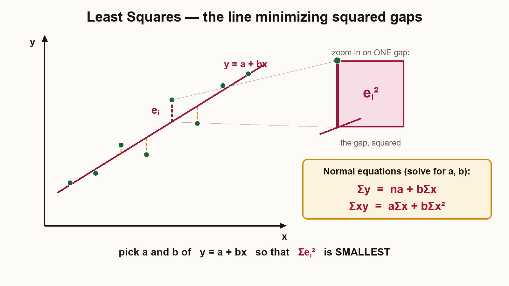
Fit a second-degree parabola y = a + bx + cx² to the following data using the method of least squares:
| x | 0 | 1 | 2 | 3 | 4 |
|---|---|---|---|---|---|
| y | 1.0 | 1.8 | 1.3 | 2.5 | 6.3 |
Fit an exponential curve of the form y = ab^x to the following data:
| x | 1 | 2 | 3 | 4 | 5 | 6 | 7 | 8 |
|---|---|---|---|---|---|---|---|---|
| y | 1.0 | 1.2 | 1.8 | 2.5 | 3.6 | 4.7 | 6.6 | 9.1 |
Fit a power curve of the form Y = a·Xb to the following data by the method of least squares:
| X | 1 | 2 | 3 | 4 |
|---|---|---|---|---|
| Y | 3 | 12 | 27 | 48 |
| X | Y | U = log X | V = log Y | U·V | U² |
|---|---|---|---|---|---|
| 1 | 3 | 0.0000 | 0.4771 | 0.0000 | 0.0000 |
| 2 | 12 | 0.3010 | 1.0792 | 0.3248 | 0.0906 |
| 3 | 27 | 0.4771 | 1.4314 | 0.6829 | 0.2276 |
| 4 | 48 | 0.6021 | 1.6812 | 1.0123 | 0.3625 |
| Σ | — | 1.3802 | 4.6689 | 2.0200 | 0.6807 |
Calibrated mock paper — questions frequency-ranked across 6 real same-syllabus BCA(DS)-IV papers, drafted to the exact mark allocations and syllabus coverage.
| Question type | Seen in | Maps to |
|---|---|---|
| Continuous pdf → find k, mean, variance | 5/6 | Q4(b) · Real Q3(a) |
| MGF (exponential / piecewise) → mean, SD | 5/6 | Q2(b) · Real Q3(b) |
| Poisson fitting → theoretical frequencies | 5/6 | Q3(b) · Real Q2(a)/Q6(b) |
| Joint RV → marginal, conditional, Cov, ρ | 4/6 | Q4(a)+(b) |
| Two regression equations (least squares) | 4/6 | Q5 · Real Q5(a) |
| Normal distribution — proportions / reverse (find μ, σ) | 4/6 | Q3(a) · Real Q6(a) |
| Binomial — mean/var/mode, fit, family counts | 4/6 | Q2(a) · Real Q2(b) |
| Karl Pearson skewness (grouped) | 4/6 | Q5 · Real Q4(a) |
| Rank correlation (with ties) | 4/6 | Q7(a) · Real Q7(a) |
| Grouped mean / median / mode / SD | 4/6 | Q5(b)/Q7(b) · Real Q4(b)/Q7(b) |
| Curve fitting — straight line + parabola | 2/6 | Q6(a) · Real Q5(b) |
| Pearson correlation · Bayes probability | 2/6 | Q5(a) · Part-A |
The 5/6 and 4/6 rows are near-certain — the same top types (continuous-pdf, MGF, Poisson-fit, Joint-RV, two-regression, Normal, Binomial, Bayes) recur in adjacent-stream university maths papers too, reinforcing the frequency.
| Parameter | Correlation | Regression |
|---|---|---|
| Purpose | Shows strength and direction of linear link | Builds a predictive equation Y = a + bX |
| Symmetry | Same both ways: rxy = ryx | Two different slopes: byx ≠ bxy |
| Units | No units, sits in [−1, +1] | Slope has units of Y per X (no fixed range) |
The Binomial distribution counts "successes" in n independent Bernoulli trials. Each trial has success chance p and failure chance q = 1 − p. Think: n IPL matches, each with win-chance p. Write X ~ B(n, p):
The moment generating function (MGF) is MX(t) = E[etX]. It fixes the full distribution and gives every moment by the rule MX(r)(0) = E(Xr). We work it out twice: once for the given Exponential pdf (continuous integral), once for the Binomial (discrete sum). Copy whichever pattern the exam asks.
Part (b)(i) — MGF of f(x) = 2e−2x, x ≥ 0 (Exponential with λ = 2).
Part (b)(ii) — MGF of Binomial(n, p) (discrete-sum pattern, included for breadth).
| Distribution | Type | pmf / pdf | Mean | Variance | MGF MX(t) | Typical Application |
|---|---|---|---|---|---|---|
| Bernoulli(p) | Discrete | pxq1−x, x ∈ {0, 1} | p | pq | q + pet | Single yes/no trial |
| Binomial(n, p) | Discrete | C(n,k) pk qn−k | np | npq | (q + pet)n | k successes in n trials, A/B testing |
| Geometric(p) | Discrete | qk−1 p, k = 1, 2, … | 1/p | q/p2 | pet / (1 − qet) | Trial of first success (call retries) |
| Poisson(λ) | Discrete | e−λλk/k! | λ | λ | exp[λ(et − 1)] | Rare events per fixed window |
| Uniform[a, b] | Continuous | 1/(b − a), a ≤ x ≤ b | (a + b)/2 | (b − a)2/12 | (etb − eta) / [t(b − a)] | Random latency floor / lottery |
| Exponential(λ) | Continuous | λe−λx, x ≥ 0 | 1/λ | 1/λ2 | λ / (λ − t), t < λ | Inter-arrival times, lifetimes |
| Normal(μ, σ2) | Continuous | (1 / σ√(2π)) · exp[−(x − μ)2/(2σ2)] | μ | σ2 | exp[μt + σ2t2/2] | Aggregate effects, Central Limit Theorem |
Binomial drives A/B-test calculators, spam filters (k of n words match), and quality-control sampling tables. The Exponential MGF runs Poisson-process queue models (M/M/1 call centres, web servers), bathtub-curve reliability charts, and survival-regression rates. The MGF trick itself is the main route to prove the Central Limit Theorem and to find sums of independent random variables.
For X ~ B(n, p): Mean = np, Var = npq, Mode = ⌊(n + 1)p⌋. For the given Exponential pdf f(x) = 2e−2x: MX(t) = 2/(2 − t) for t < 2. Then E(X) = ½ and Var(X) = ¼ from the first two derivatives at 0. The MGF method works for every standard distribution. Use it whenever you need any moment.
| Accidents (x) | 0 | 1 | 2 | 3 | 4 |
|---|---|---|---|---|---|
| Observed fi | 122 | 60 | 15 | 2 | 1 |
The Normal distribution N(μ, σ2) is the bell curve. Its pdf is f(x) = (1/σ√(2π)) · exp[−(x − μ)2/(2σ2)]. Think of student heights or exam marks — they cluster around a mean and taper on both sides. Key rules for every Z-problem:
For this problem μ = 120, σ = 40, so Z = (X − 120) / 40.
| z | 0.00 | 0.50 | 1.00 | 1.50 | 2.00 | 2.50 | 3.00 |
|---|---|---|---|---|---|---|---|
| Φ(z) | 0.5000 | 0.6915 | 0.8413 | 0.9332 | 0.9772 | 0.9938 | 0.9987 |
The Poisson X ~ Poisson(λ) has P(X = k) = e−λ λk/k!. It is the limit of B(n, p) when n is large, p is small, and np = λ. Its key sign is E(X) = Var(X) = λ. So any data where the sample mean ≈ sample variance is a good Poisson candidate. Example: number of road accidents per day, calls per hour, defects per chip. We fit by Method of Moments: set sample mean = λ̂.
Total observations N = Σfi = 122 + 60 + 15 + 2 + 1 = 200.
| xi | 0 | 1 | 2 | 3 | 4 | Σ |
|---|---|---|---|---|---|---|
| fi | 122 | 60 | 15 | 2 | 1 | 200 |
| fi·xi | 0 | 60 | 30 | 6 | 4 | 100 |
| fi·xi2 | 0 | 60 | 60 | 18 | 16 | 154 |
| x | 0 | 1 | 2 | 3 | 4 | Total |
|---|---|---|---|---|---|---|
| Observed fi | 122 | 60 | 15 | 2 | 1 | 200 |
| Theoretical Ti | 121.30 | 60.65 | 15.16 | 2.53 | 0.32 | 199.96 |
The Normal curve drives Six-Sigma quality control (Cp, Cpk), Value-at-Risk in finance, IQ scores, and tolerance bands in manufacturing. Poisson models call-centre arrivals, web-server hits per second, router packets, insurance claims, wafer defects, and football goals. Both are default tools in modern data-science work.
Z-standardisation turns any Normal probability into a Φ-table lookup. The symmetry rule Φ(−z) = 1 − Φ(z) covers the negative side that tables skip. Poisson fitting needs just one number (λ̂ = x̄). The fitted frequencies (121.30, 60.65, 15.16, 2.53, 0.32) match the observed accident data closely at every count, so the Poisson fit is sound.
| X \\ Y | Y = 1 | Y = 2 |
|---|---|---|
| X = 1 | 0.1 | 0.2 |
| X = 2 | 0.2 | 0.1 |
| X = 3 | 0.1 | 0.3 |
For a pair (X, Y) of discrete RVs, the marginal of X is the row sum of the joint distribution: P(X = x) = Σy P(X = x, Y = y). Cov(X,Y) = E(XY) − E(X)E(Y) shows how they vary together. The correlation ρ(X, Y) = Cov / (σX σY) scales it into [−1, +1]. Independence gives Cov = 0, but Cov = 0 does not mean independent — a key trap.
For a continuous pair (X, Y), the marginal PDF fX(x) is the joint density integrated over all y (and the other way for Y). The conditional PDF is f(y | x) = f(x, y) / fX(x), valid where fX(x) > 0. The covariance as an integral is Cov(X, Y) = ∫∫ (x − μX)(y − μY) f(x, y) dx dy = E(XY) − E(X)E(Y).
| Quantity | (a) Discrete | (b) Continuous |
|---|---|---|
| E(X) | 2.1 | 7/12 ≈ 0.5833 |
| E(Y) | 1.6 | 7/12 ≈ 0.5833 |
| Var(X) | 0.69 | 11/144 ≈ 0.0764 |
| Var(Y) | 0.24 | 11/144 ≈ 0.0764 |
| SD(X), SD(Y) | 0.8307, 0.4899 | 0.2764, 0.2764 |
| E(XY) | 3.4 | 1/3 ≈ 0.3333 |
| Cov(X, Y) | 0.04 | −1/144 ≈ −0.00694 |
| ρ(X, Y) | ≈ 0.0983 (weak +ve) | ≈ −0.0909 (weak −ve) |
Joint distributions sit under ML feature-correlation matrices (every pandas.DataFrame.corr() call builds one). They power Gaussian copulas in credit risk, recommendation systems where (user, item) ratings form joint data, climate models with paired temperature and rainfall fields, and multivariate tests like Hotelling's T2. The Cov-ρ pair is the base for PCA, factor analysis, and portfolio optimisation.
Marginals collapse one variable: row or column sums for discrete, one-axis integral for continuous. Conditionals re-scale the joint by the marginal. The discrete table gives a weak positive ρ ≈ 0.098, driven mostly by the (X = 3, Y = 2) cell. The continuous f(x, y) = x + y gives an almost-zero negative covariance −1/144. Both cases show: uncorrelated does not mean independent, and the size of ρ (not just its sign) shows strength.
| X | 10 | 14 | 18 | 22 | 26 | 30 | 34 | 38 | 42 | 46 |
|---|---|---|---|---|---|---|---|---|---|---|
| Y | 18 | 12 | 24 | 20 | 30 | 28 | 34 | 36 | 42 | 40 |
The Karl Pearson r shows the strength and direction of the linear link between two paired variables, fitted using the method of least squares. Think cricket batting averages vs strike rates. Key properties:
Two equivalent formulas:
(deviation form) r = Σ(x − x̄)(y − ȳ) / √[Σ(x − x̄)2 · Σ(y − ȳ)2]
(raw-score form) r = [n·ΣXY − ΣX·ΣY] / √{[n·ΣX2 − (ΣX)2][n·ΣY2 − (ΣY)2]}
| i | X | Y | X2 | Y2 | XY |
|---|---|---|---|---|---|
| 1 | 10 | 18 | 100 | 324 | 180 |
| 2 | 14 | 12 | 196 | 144 | 168 |
| 3 | 18 | 24 | 324 | 576 | 432 |
| 4 | 22 | 20 | 484 | 400 | 440 |
| 5 | 26 | 30 | 676 | 900 | 780 |
| 6 | 30 | 28 | 900 | 784 | 840 |
| 7 | 34 | 34 | 1156 | 1156 | 1156 |
| 8 | 38 | 36 | 1444 | 1296 | 1368 |
| 9 | 42 | 42 | 1764 | 1764 | 1764 |
| 10 | 46 | 40 | 2116 | 1600 | 1840 |
| Σ | 280 | 284 | 9160 | 8944 | 8968 |
| Quantity | Value |
|---|---|
| byx (slope of Y on X) | 0.7697 |
| bxy (slope of X on Y) | 1.1567 |
| Line Y on X | Y = 0.7697 X + 6.85 |
| Line X on Y | X = 1.1567 Y − 4.85 |
| r2 = byx·bxy | 0.8903 |
| r | ≈ 0.944 |
| Aspect | Karl Pearson Correlation (r) | Regression (byx, bxy) |
|---|---|---|
| Definition | Standardised measure of linear association | Best-fit line minimising Σ(Y − Ŷ)2 |
| Formula | r = Σ(x−x̄)(y−ȳ) / √[Σ(x−x̄)2·Σ(y−ȳ)2] | byx = Σ(x−x̄)(y−ȳ) / Σ(x−x̄)2 |
| Symmetry | Symmetric: rxy = ryx (one number) | Asymmetric: byx ≠ bxy (two slopes) |
| Range | −1 ≤ r ≤ +1 (unit-less) | Any real number; carries units (Y per unit X) |
| Key identity | r2 = byx · bxy; r has the same sign as both b's | |
| Use-case | Quantify strength of relationship (feature selection, EDA) | Predict Y from X (or X from Y) at a new value |
| Worked-data value | r ≈ 0.944 | byx = 0.7697; bxy = 1.1567 |
| Geometric meaning | Cosine between mean-centred X, Y vectors | Slope of least-squares projection of one vector onto the other |
| Effect of outliers | Highly sensitive (one extreme pair can flip sign) | Slope also distorted; consider robust regression for heavy tails |
Karl Pearson r is the default link metric in correlation heatmaps for ML feature picking, finance return diversification, and gene studies. The two regression lines are the simplest case of normal-equation math. Every linear model library (sklearn.linear_model.LinearRegression, R's lm(), Stata's regress) solves the matrix form XTXβ = XTy of these same equations. The rule r2 = byx·bxy grows into the R2 score in multiple regression.
The computed r ≈ 0.944 shows a strong positive linear link. Both regression lines pass through (X̄, Ȳ) = (28, 28.4). Their slopes multiply to r2 ≈ 0.8903, recovering r via square root. The same method scales to multi-variable regression via matrix least squares — one small jump from this 2-variable case.
Each pair of variables has two regression lines — Y on X (predicts Y from X) and X on Y (predicts X from Y). They always cross at the mean point (X̄, Ȳ), so solving the two equations simultaneously recovers the means even when the raw data is lost. The slopes satisfy byx = r·σy/σx and bxy = r·σx/σy, hence the key identity r² = byx·bxy. The slope assignment is fixed by the rule |byx·bxy| ≤ 1: only the assignment whose product does not exceed 1 is admissible, because r² can never exceed 1.
Use the admissibility test |byx·bxy| ≤ 1. Try both assignments and keep the one whose product stays at or below 1:
| Assignment | byx | bxy | Product | Verdict |
|---|---|---|---|---|
| Eq 1 = Y on X, Eq 2 = X on Y | 0.8 | 0.45 | 0.36 ≤ 1 | Admissible ✓ |
| Eq 2 = Y on X, Eq 1 = X on Y | 2.2222 | 1.25 | 2.778 > 1 | Rejected ✗ |
| Quantity | Value |
|---|---|
| Mean X̄ | 13 |
| Mean Ȳ | 17 |
| byx (Y on X) | 0.8 |
| bxy (X on Y) | 0.45 |
| Correlation r | +0.6 |
| σx (given Var X = 9) | 3 |
| σy | 4 |
The "recover parameters from the fitted model" move is everyday data science. When only a trained sklearn.linear_model.LinearRegression object survives (raw data purged for privacy or storage), its coefficients still let you reconstruct means, the correlation, and the spread — exactly this algebra. The r² = byx·bxy identity is the 2-variable seed of the R² score reported by every regression library.
From only the two regression lines and Var(X) = 9, the full bivariate summary is rebuilt: X̄ = 13, Ȳ = 17, r = 0.6, σy = 4. The admissibility test |byx·bxy| ≤ 1 uniquely fixed which line was Y on X, and the intersection point recovered the means — the two facts an examiner rewards most in this question type.
| X | 0 | 1 | 2 | 3 | 4 |
|---|---|---|---|---|---|
| Y | 1 | 1.8 | 1.3 | 2.5 | 6.3 |
The method of least squares picks (a, b, c) that make S = Σ(Yi − a − bXi − cXi2)2 as small as possible. Setting ∂S/∂a = ∂S/∂b = ∂S/∂c = 0 gives the three normal equations below. The same pattern grows: an n-degree polynomial gives n + 1 normal equations using sums of Xk.
| X | Y (obs) | Ŷ = 1.42 − 1.07X + 0.55X2 | Residual Y − Ŷ |
|---|---|---|---|
| 0 | 1.0 | 1.42 | −0.42 |
| 1 | 1.8 | 1.42 − 1.07 + 0.55 = 0.90 | +0.90 |
| 2 | 1.3 | 1.42 − 2.14 + 2.20 = 1.48 | −0.18 |
| 3 | 2.5 | 1.42 − 3.21 + 4.95 = 3.16 | −0.66 |
| 4 | 6.3 | 1.42 − 4.28 + 8.80 = 5.94 | +0.36 |
| Σ | 12.9 | 12.90 | 0.00 ✓ |
Bayes' theorem flips a forward chance (model to data) into a backward one (data to model): posterior P(D | +) = P(+ | D) P(D) / P(+). The prior is P(D), and P(+) comes from the total probability rule over {D, D′}. The two test inputs are sensitivity P(+ | D) and specificity P(− | D′). The false-positive rate is 1 − specificity.
| Disease (D) | No Disease (D′) | Total | |
|---|---|---|---|
| Test + | 99 (TP) | 495 (FP) | 594 |
| Test − | 1 (FN) | 9405 (TN) | 9406 |
| Total | 100 | 9900 | 10000 |
Least-squares curve fitting is the engine of every supervised ML model. Gradient descent solves the same normal equations at scale (XTX β = XTy). Polynomial regression is the direct grown-up form of the parabola fit. Bayes' theorem drives Naïve Bayes spam filters, medical-test reading, A/B-test posterior updates, and the base for Bayesian deep learning. The base-rate trap (posterior ≈ 17% even with a 99%-accurate test) is the classic example cited in clinical-decision and screening policy.
Parabola fit Y = 1.42 − 1.07X + 0.55X2 makes Σ(Y − Ŷ)2 smallest. Residuals sum to zero, as least squares needs. Bayes gives P(D | +) ≈ 16.67%. Even a 99%-accurate test on a 1%-prevalence disease gives mostly false positives. The false-positive count 0.05 × 0.99 = 0.0495 swamps the true-positive count 0.99 × 0.01 = 0.0099. Both results show how clean arithmetic beats gut feeling.
| Candidate | A | B | C | D | E | F | G | H | I | J |
|---|---|---|---|---|---|---|---|---|---|---|
| Judge 1 (R₁) | 1 | 2 | 3 | 4 | 5 | 6 | 7 | 8 | 9 | 10 |
| Judge 2 (R₂) | 2 | 1 | 4 | 3 | 6 | 5 | 8 | 7 | 10 | 9 |
Spearman rank correlation ρs is the rank-based Karl Pearson r, computed on the ranks of X and Y instead of raw values. Useful when you only have positions (1st, 2nd, 3rd) — like judges scoring a dance contest. Properties:
| Candidate | R1 | R2 | D = R1 − R2 | D2 |
|---|---|---|---|---|
| A | 1 | 2 | −1 | 1 |
| B | 2 | 1 | +1 | 1 |
| C | 3 | 4 | −1 | 1 |
| D | 4 | 3 | +1 | 1 |
| E | 5 | 6 | −1 | 1 |
| F | 6 | 5 | +1 | 1 |
| G | 7 | 8 | −1 | 1 |
| H | 8 | 7 | +1 | 1 |
| I | 9 | 10 | −1 | 1 |
| J | 10 | 9 | +1 | 1 |
| Σ (n = 10) | 0 | 10 | ||
For a joint pdf f(x, y), the chance of any region R is P((X, Y) ∈ R) = ∫∫R f(x, y) dx dy. When f(x, y) = g(x)·h(y) and the region is a rectangle [a, b] × [c, d], the double integral splits into two single ones — a big shortcut. For non-rectangular regions like X + Y < 1, the inner limit depends on the outer variable. Get it from the boundary line.
| Quantity | Value |
|---|---|
| ΣD2 | 10 |
| Spearman ρs | 0.9394 |
| P(X < ½ ∩ Y < ½) | 1/16 = 0.0625 |
| P(X + Y < 1) | 1/6 ≈ 0.1667 |
Spearman's ρs is used in sports analytics (season-to-season player ranking), Likert-scale surveys, judge-vs-judge agreement, and feature ranking in ML pipelines where the link is monotone but not straight. Joint-pdf region integration is the workhorse of Bayesian credible regions, MCMC target evaluation, multi-variable risk models (joint loss limits), and failure engineering where failure boundaries are inequalities on multiple stress variables.
Spearman ρs = 0.9394 shows the two judges agreed strongly on ranking (every pair off by just ±1). Cross-check via Karl Pearson r on the ranks: both methods give 0.9394 to four decimal places. Joint-pdf integrals split into product form for rectangle regions (P(X < ½ ∩ Y < ½) = 1/16). They need linked limits for triangle regions (P(X + Y < 1) = 1/6). Sketch the region first to avoid both limit errors and sign errors.
For a continuous random variable, the constant k is fixed by the normalisation condition ∫f(x) dx = 1 over the support. The mean is ∫x·f(x) dx, the variance is E[X²] − μ², and the mean deviation about the mean is E|X − μ|. Here f(x) = k·x(2 − x) is a downward parabola on [0, 2], symmetric about x = 1.
| Quantity | Value |
|---|---|
| Constant k | 3/4 |
| Mean μ | 1 |
| Variance σ² | 0.2 (σ ≈ 0.447) |
| Mean deviation about mean | 3/8 = 0.375 |
This is an inverse Normal problem: instead of finding a probability from a z-value, we work backwards from given tail percentages to two z-values, set up two equations in μ and σ via the standardisation z = (x − μ)/σ, and solve the pair.
When the median is given but one frequency is unknown, identify the median class (the class containing the given median value), plug the values into the grouped-data median formula M = L + [(N/2 − cf)/f]·h, and solve the resulting equation for the missing frequency x.
| Class | Frequency f | Cumulative freq (cf) |
|---|---|---|
| 0–10 | 5 | 5 |
| 10–20 | 25 | 30 |
| 20–30 (median class) | x | 30 + x |
| 30–40 | 18 | 48 + x |
| 40–50 | 7 | 55 + x |
| Total | N = 55 + x | — |
With two fair dice there are 36 equally-likely outcomes. First build the probability distribution of D = |X − Y| by counting how many of the 36 pairs give each absolute difference, then use E(D) = Σ d·P(d) and Var(D) = E(D²) − [E(D)]².
| D = |X − Y| | 0 | 1 | 2 | 3 | 4 | 5 |
|---|---|---|---|---|---|---|
| Number of outcomes | 6 | 10 | 8 | 6 | 4 | 2 |
| P(D) | 6/36 | 10/36 | 8/36 | 6/36 | 4/36 | 2/36 |
Total outcomes = 6 + 10 + 8 + 6 + 4 + 2 = 36 ✓.
A real BCA(DS)-IV university paper (code 312411 / BCA-DS-23-204) — different scheme code, identical syllabus to your BCD-202-V exam, so it serves as the answer-style anchor. Every Part-A short is point-form; every Part-B answer is fully worked (formula → substitution → arithmetic → boxed answer). Notation follows Gupta & Kapoor / Veerarajan.
| Deaths (x) | 0 | 1 | 2 | 3 | 4 |
|---|---|---|---|---|---|
| Frequency f | 109 | 65 | 22 | 3 | 1 |
Fitting a Poisson distribution means estimating its only parameter λ = x̄ from the data, then generating expected frequencies via N·P(X = x). This is the classic Bortkiewicz horse-kick dataset.
| x | f | f·x |
|---|---|---|
| 0 | 109 | 0 |
| 1 | 65 | 65 |
| 2 | 22 | 44 |
| 3 | 3 | 9 |
| 4 | 1 | 4 |
| Σ | N = 200 | Σfx = 122 |
| x | P(X=x) | N·P(X=x) | Rounded |
|---|---|---|---|
| 0 | 0.5434 | 108.67 | 109 |
| 1 | 0.3314 | 66.29 | 66 |
| 2 | 0.1011 | 20.22 | 20 |
| 3 | 0.0206 | 4.11 | 4 |
| 4 | 0.0031 | 0.63 | 1 |
| Σ | ≈1.000 | 199.92 | 200 |
Let X = number of boys in a family of 4. Then X ~ B(4, ½), so P(X = k) = C(4,k)(½)4 = C(4,k)/16. The eight C(4,k) values are 1, 4, 6, 4, 1 for k = 0…4. Expected families = 800 × P.
The pdf is symmetric about x = 1 on [0, 2]. Use the normalisation ∫f = 1 to fix k, then standard integrals for moments. Useful sub-results: ∫02x(2−x)dx = 4/3, ∫02x²(2−x)dx = 4/3, ∫02x³(2−x)dx = 8/5.
The moment generating function is MX(t) = E[etX] = ∫0∞ etx f(x) dx. Here the rate is λ = 1/c, so we expect mean = c and variance = c².
| Income | 400–500 | 500–600 | 600–700 | 700–800 | 800–900 |
|---|---|---|---|---|---|
| Frequency | 8 | 16 | 20 | 17 | 3 |
| Class | 0–10 | 10–20 | 20–30 | 30–40 | 40–50 | 50–60 | 60–70 | 70–80 |
|---|---|---|---|---|---|---|---|---|
| Frequency | 5 | 10 | 20 | 40 | 30 | 20 | 10 | 5 |
Karl Pearson's coefficient Sk = (Mean − Mode)/σ. Use mid-values m, assumed mean A = 650, step h = 100, step-deviation d = (m − A)/h.
| m | f | d | fd | fd² |
|---|---|---|---|---|
| 450 | 8 | −2 | −16 | 32 |
| 550 | 16 | −1 | −16 | 16 |
| 650 | 20 | 0 | 0 | 0 |
| 750 | 17 | 1 | 17 | 17 |
| 850 | 3 | 2 | 6 | 12 |
| Σ | 64 | −9 | 77 |
Use mid-values, assumed mean A = 45, step h = 10, d = (m − A)/10.
| m | f | d | fd | fd² |
|---|---|---|---|---|
| 5 | 5 | −4 | −20 | 80 |
| 15 | 10 | −3 | −30 | 90 |
| 25 | 20 | −2 | −40 | 80 |
| 35 | 40 | −1 | −40 | 40 |
| 45 | 30 | 0 | 0 | 0 |
| 55 | 20 | 1 | 20 | 20 |
| 65 | 10 | 2 | 20 | 40 |
| 75 | 5 | 3 | 15 | 45 |
| Σ | 140 | −75 | 395 |
n = 8, ΣX = 544 ⇒ x̄ = 68; ΣY = 552 ⇒ ȳ = 69. Work with deviations u = X − 68, v = Y − 69.
| X | Y | u | v | u² | v² | uv |
|---|---|---|---|---|---|---|
| 65 | 67 | −3 | −2 | 9 | 4 | 6 |
| 66 | 68 | −2 | −1 | 4 | 1 | 2 |
| 67 | 65 | −1 | −4 | 1 | 16 | 4 |
| 67 | 68 | −1 | −1 | 1 | 1 | 1 |
| 68 | 72 | 0 | 3 | 0 | 9 | 0 |
| 69 | 72 | 1 | 3 | 1 | 9 | 3 |
| 70 | 69 | 2 | 0 | 4 | 0 | 0 |
| 72 | 71 | 4 | 2 | 16 | 4 | 8 |
| Σ | 0 | 0 | 36 | 44 | 24 |
Normal equations: Σy = na + bΣx and Σxy = aΣx + bΣx². Here n = 5.
| x | y | x² | xy |
|---|---|---|---|
| 0 | 1.0 | 0 | 0.0 |
| 1 | 1.8 | 1 | 1.8 |
| 2 | 3.3 | 4 | 6.6 |
| 3 | 4.5 | 9 | 13.5 |
| 4 | 6.3 | 16 | 25.2 |
| Σ | 16.9 | 30 | 47.1 |
| x | 0 | 1 | 2 | 3 | 4 |
|---|---|---|---|---|---|
| Frequency F | 122 | 60 | 15 | 2 | 1 |
17% lies below 30 and 17% above 60. By the symmetry of the Normal curve, equal tail areas on both ends mean the two cut-points 30 and 60 are equidistant from the mean.
| x | F | F·x |
|---|---|---|
| 0 | 122 | 0 |
| 1 | 60 | 60 |
| 2 | 15 | 30 |
| 3 | 2 | 6 |
| 4 | 1 | 4 |
| Σ | N = 200 | Σfx = 100 |
| x | P(X=x) | N·P | Rounded |
|---|---|---|---|
| 0 | 0.6065 | 121.31 | 121 |
| 1 | 0.3033 | 60.65 | 61 |
| 2 | 0.0758 | 15.16 | 15 |
| 3 | 0.0126 | 2.53 | 3 |
| 4 | 0.0016 | 0.32 | 0 |
| Σ | ≈1.000 | 199.97 | 200 |
| Marks | 0–10 | 10–20 | 20–30 | 30–40 | 40–50 | 50–60 | 60–70 |
|---|---|---|---|---|---|---|---|
| Students | 4 | 8 | 11 | 15 | 12 | 6 | 3 |
Spearman's ρ = 1 − 6[Σd² + ΣCF] / [n(n² − 1)], where d = rank difference and the tie correction CF = Σ(m³ − m)/12 over each tied group. Rank highest = 1, assign the average rank to ties. Ties: in X, 64 occurs 3 times (m = 3) and 75 occurs 2 times (m = 2); in Y, 68 occurs 2 times (m = 2).
| X | RX | Y | RY | d = RX−RY | d² |
|---|---|---|---|---|---|
| 68 | 4 | 62 | 5 | −1 | 1 |
| 64 | 6 | 58 | 7 | −1 | 1 |
| 75 | 2.5 | 68 | 3.5 | −1 | 1 |
| 50 | 9 | 45 | 10 | −1 | 1 |
| 64 | 6 | 81 | 1 | 5 | 25 |
| 80 | 1 | 60 | 6 | −5 | 25 |
| 75 | 2.5 | 68 | 3.5 | −1 | 1 |
| 40 | 10 | 48 | 9 | 1 | 1 |
| 55 | 8 | 50 | 8 | 0 | 0 |
| 64 | 6 | 70 | 2 | 4 | 16 |
| Σ | 0 | 72 |
N = 4+8+11+15+12+6+3 = 59, class width h = 10. Cumulative frequencies: 4, 12, 23, 38, 50, 56, 59.
| Marks | f | Cumulative f |
|---|---|---|
| 0–10 | 4 | 4 |
| 10–20 | 8 | 12 |
| 20–30 | 11 | 23 |
| 30–40 | 15 | 38 |
| 40–50 | 12 | 50 |
| 50–60 | 6 | 56 |
| 60–70 | 3 | 59 |
All essential formulas, distributions, kurtosis bounds, and least-square equations condensed into a single high-density revision panel.
Prior * Likelihood / Total EvidenceRaw = about A, Central = about MeanMeso=3, Lepto>3, Platy<3(x̄, ȳ).r² = b_yx * b_xy, where r has the identical sign as the two regression coefficients.
1. Probability Rules:
- P(A ∪ B) = P(A) + P(B) − P(A ∩ B)
- P(A|B) = P(A ∩ B) / P(B)
- Bayes: P(Ai|B) = P(B|Ai)P(Ai) / ∑P(B|Aj)P(Aj)
2. Core Distributions:
- Binomial: P(X=k) = C(n,k) p^k q^(n-k) | Mean=np | Var=npq | MGF=(q+p*e^t)^n
- Poisson: P(X=k) = [e^(-L) L^k]/k! | Mean=L | Var=L | MGF=exp(L*(e^t-1))
- Normal: Z = (X - M)/S | PDF f(x) standard bell curve | MGF=exp(M*t + 0.5*S^2*t^2)
- Exponential: f(x) = L*e^(-L*x) | Mean=1/L | Var=1/L^2 | MGF=L/(L-t)
3. Moments Transformation:
- Mean = A + u₁'
- u₂ = u₂' − (u₁')²
- u₃ = u₃' − 3u₂'u₁' + 2(u₁')³
- u₄ = u₄' − 4u₃'u₁' + 6u₂'(u₁')² − 3(u₁')⁴
- Skewness: β₁ = u₃² / u₂³
- Kurtosis: β₂ = u₄ / u₂²
4. Central Tendency & Stats:
- Grouped Mean: ∑(f*x) / N
- Grouped Median: L + [ (N/2 − cf) / f ] * h (median class = where N/2-th item lies)
- Grouped Mode: L + [ (f1 − f0) / (2*f1 − f0 − f2) ] * h (modal class = max freq)
- Empirical Relation: Mode ≈ 3*Median - 2*Mean
- Combined Mean: (n1*M1 + n2*M2) / (n1+n2)
- Grouped Variance: s² = [ ∑f(x²) / N ] - Mean²
5. Regression & Curve Fitting:
- Correlation r = Cov(X,Y)/[SD(X)*SD(Y)]
- Spearman Rank R = 1 - 6*∑D² / [n(n²-1)]
- Slopes: b_yx = r*(SD_y/SD_x) | b_xy = r*(SD_x/SD_y)
- Normal equations (y = a + bx):
∑y = n*a + b*∑x
∑xy = a*∑x + b*∑x²
- Normal equations (y = a + bx + cx²):
∑y = n*a + b*∑x + c*∑x²
∑xy = a*∑x + b*∑x² + c*∑x³
∑x²y = a*∑x² + b*∑x³ + c*∑x⁴
The seven Φ(z) values you must carry into the hall for any Normal question, plus three step-chains for the procedures the brain forgets first.
| z | 0.00 | 0.50 | 1.00 | 1.50 | 2.00 | 2.50 | 3.00 |
|---|---|---|---|---|---|---|---|
| Φ(z) | 0.5000 | 0.6915 | 0.8413 | 0.9332 | 0.9772 | 0.9938 | 0.9987 |
Eleven Part-A sub-questions, each answered in 2–4 lines. Memorise the structure; in the exam, copy the bullet and add one example.
Five high-leverage formulas. If the brain blanks in the hall, these five recover ~40 marks across Q4–Q7.
Every formula needed across Unit I–IV in one scannable matrix. Numerical-heavy subject = full working required, never paraphrase.
| Topic | Formula | Mean | Variance | MGF / Notes |
|---|---|---|---|---|
| Binomial B(n, p) | P(X=k) = C(n,k) pk qn−k | np | npq | (q + p·et)n |
| Poisson P(λ) | P(X=k) = e−λ·λk/k! | λ | λ | eλ(et−1) · limit of B(n,p) as n→∞, np=λ |
| Normal N(μ, σ²) | Z = (X − μ)/σ | μ | σ² | eμt + ½σ²t² · 68-95-99.7 rule |
| Exponential Exp(λ) | f(x) = λ·e−λx, x ≥ 0 | 1/λ | 1/λ² | λ/(λ − t), t < λ · memoryless |
| Karl Pearson r | r = [n·Σxy − Σx·Σy] / √[(n·Σx² − (Σx)²)·(n·Σy² − (Σy)²)] · range −1 ≤ r ≤ +1 | |||
| Regression slopes | byx = r·σy/σx · bxy = r·σx/σy · check: r² = byx·bxy · lines meet at (x̄, ȳ) | |||
| Spearman rank ρs | ρs = 1 − 6·ΣD² / [n(n² − 1)] where D = Rx − Ry · use when data is ranked / ordinal / outliers present | |||
| Bayes' theorem | P(Ai | B) = P(B | Ai)·P(Ai) / Σj P(B | Aj)·P(Aj) · prior × likelihood / evidence | |||